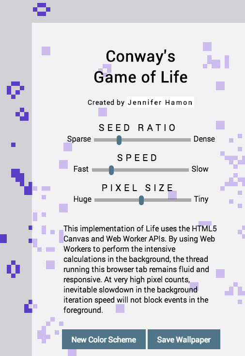
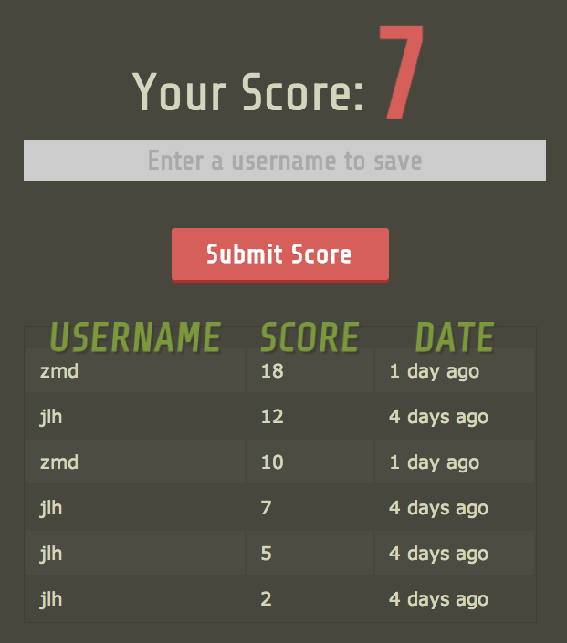
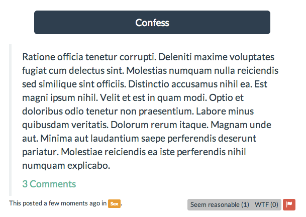

Conway's Game of Life:
My favorite code kata
Conway's Game of Life holds a special place in my heart. The first non-trivial program I ever wrote was a simple version of the game implemented in Python, and when I decided to learn JavaScript I began by coding up Life. Life makes a great code kata because it is relatively quick and easy to get a basic version going, but it also leaves a lot of room for experimentation and improvement.
I've now done this several times in JavaScript, each time learning something new. My first implementation was to learn basic JavaScript syntax and the HTML5 Canvas API, but the code was pretty terrible by my current standards. A second implementation went after the low-hanging fruit by improving the separation of concerns between view rendering and game calculations.
My third JavaScript implementation was to learn more about event-driven programming with Backbone.js. In the Backbone version, each cell was represented as a Backbone model listening for changes in all its neighbors. Each div element in the page was bound to a Backbone view that was listening for changes in a cell model. The Backbone view automatically changed the div's CSS styling when the underlying data model fired a change event.
Though by no means "fast" compared to other implementations (see the memoized Hashlife algorithm to have your mind blown), my latest rendition of the game adds several improvements. Most important of these is my use of the HTML5 Web Workers API to offload heavy calculations to another thread. This allows the UI thread responsible for rendering everything the user sees in the active tab to continue unimpeded while the Life code runs the simluation in the background thread.
Now that the UI thread is not saturated by Life's iterative calculations, I have added a simple web form to allow users to adjust the game's parameters. When users interact with the form, a jQuery click handler sends a message to the background process to adjust the game's state.
I have also improved the algorithmic efficiency in the latest version. Instead of visiting every cell during every iteration, I now keep track of a "change list". Since the only thing that can change a cell's status is a change in its number of immediate living neighbors, I only need to check the cells that have changed and or whose neighbors have changed. This is a huge savings in computational expense after the first few chaotic iterations.

AdoptMe.me
Meme generator meets Petfinder.com API.
When I began AdoptMe.me, I knew it was an ambitious project because of the many moving parts involved. I learned a lot from the process, both successes and failures, but the project is currently on inedefinite hiatus. You can view the bones live on the web at AdoptMe.me.
I originally conceived of the site as a cat meme generator in the same vein as icanhascheezburger, but with a social mission of bringing visibility to cats languishing in animal shelters. I thought that if a person is going to spend their time making funny captions for cat images and sharing them around, they might as well give the visibility to a cat that needs it.

The technical vision was that I would pull images and data from the free petfinder.com API, push them into my Amazon S3 bucket, let users caption them with a canvas-based JavaScript editor, and then send the resulting image off to my Amazon S3 bucket. The image would be watermarked with a generated shortlink that viewers of the image could follow to learn more about how to adopt that animal should they be interested in doing so.
Rails Backend
A lot needs to happen behind the scenes to create a site handling image media and integrating with third-party APIs. Since I was deploying on Heroku, first order of business was to find a third-party provider of storage for all my image assets. Amazon S3 was the obvious choice because it is cheap, fast, and reliable. Amazon provides an official aws-sdk gem for interacting with their web services, but it contains hundreds of methods for dozens of services so I ended up writing my own Storable module that extends ActiveSupport::Concerns to wrap just the functionality I needed with a simpler API. My Storable module follows a template pattern, allowing me to easily store and retrieve image data associated with any of my ActiveRecord models by specifying a filename root and including the module.
The backend included models for Pet, Image, and Caption. Pet models were created and populated using data fetched from the Petfinder JSON API. I quickly discovered that their free API is worth about what I paid for it (i.e. not much), and I spent a lot of time writing code to clean or discard bogus responses. Image tracked the metadata for unaltered images associated with a Pet, and Caption tracked metadata for each user-created meme. Having separate Image and Caption made the associations clear and easily extensible should I want to find, say, all memes with common text content or all memes derived from a particular animal or photo.
I decided not to build views on the server side, because I knew the image editor I wanted to write would involve heavy JavaScript. So the data in my models is all exposed via a JSON API for consumption by a client-side application I would develop with Backbone.js.
Finally, I used figaro to manage my third-party credentials. The figaro gem allows me to store my private credentials in an initialization file that is not checked into source control, but the gem will load them into an environment variable for you when the app boots up.
Backbone.js, HTML5 Canvas Frontend
Visiting the site you will be served a static page with the Backbone application. Much of the data is bootstrapped into the page to avoid unnecessary calls to my JSON API. I made Backbone views for an index page, a meme creation editor, and a show pet/meme page where viewers could learn more about adopting. Each of these views is complex, and involves one or more sub-views.
Coding an MVP version of the canvas-based meme editor was a straightforward task after some of my other Canvas projects. A cat image is set as the background for the canvas element. As the user types, the editor listens to keypress events and updates the overlayed text. I wanted each image to have a shortlink-style url in the corner where a viewer of the image could visit and learn more about adopting the pet. So I wrote the shortlink and watermarking logic on the backend, and was nearing the last piece of the MVP puzzle: uploading my newly captioned images.
Problems with the Same-Origin Policy
It is at that moment that I ran head-on into a Same-Origin security error. I learned, painfully, that the browser's Same-Origin Policy was not going to let me save any of my users meme images directly to S3 because the background cat image was not coming from the same origin as the page I was serving from Heroku. What I thought was going to be as easy as a call to canvas.toDataURL() ended up being a much bigger problem.
I fiddled with server side generation of the captioned images using imagemagick via the rmagick gem. I actually got this to work and its what you will experience if you try to use the live version of the site at this time. This backend image manipulation is why the actual results do not match the editor preview. I realized quickly, however, that imagemagick was slow, and I knew that blocking my Rails application with big image processing jobs was going to be unacceptably slow with more than one or two concurrent users. And the image work wasn't a candidate to be a deferred job because the user is waiting to see their creation and share it around on the web.
Hiatus
Given my knowledge at the time, the whole thing seemed unsalvageable at that point. I made the decision to put the project on hold while I kept learning and working on other things, hoping to get back to it one day and do the job right. Since then I've learned that what I originally intended may be possible with CORS, Cross-Origin Resource Sharing, so I'm excited to pick up again where I left off.
jlh.io
My very own link shortener.
I created this Backbone/Rails app because sometimes it's nice to have shortlinks, but I wanted to retain control of my links rather than routing them through a third-party service I have no control over. In it's present form, it only has one user-facing feature: enter a URL and recieve back a valid shortlink. It does one thing, and does it well.

Rails Backend
Even though the public-facing site is almost trivial in what it offers at this time, I have kept in mind the analytics features of sites like Bitly.com while implementing a backend with separate models for PageView, Shortlink, TargetUrl, and User.
When you follow a shortlink, a controller logs that visit by creating a PageView before sending you on your way to your destination. Having distinct Shortlink and TargetUrl means that I will be able to easily compute and show visit analytics on a per-site or per-shortlink or per-user basis if I ever get around to it. Shortlink and TargetUrl must be separate models because a user might own a shortlink but not the associated target url; many people might create their own shortlinks for the same online destination.
The site serves my present needs just fine in its present form so I haven't built-out the analytics frontend. But I enjoyed thinking about the associations needed in the domain model on the backend.
Serpent.io
Event-driven programming, with snakes!
When I first wrote this game I was still learning the "JavaScript way" of doing object-oriented programming with prototypical inheritance. I more or less succeeded in that aspect, but the code responsible for rendering the view and managing user interactions was a huge ball of mud. At that time I knew just enough jQuery to be dangerous, and while the basic mechanics seemed to work I had all my truth in the DOM and ran into a wall while trying to extend it to have more features. I wasn't unbinding events properly, so chaos ensued when I tried to reset the game for another play without a hard refresh. It was a mess, but I had other things I wanted to work on.
Backbone reboot
I recently revisted the project for a couple of days to apply what I'd learned in the intervening months about keeping a clean separation between the DOM and my data with the help of a client-side framework called Backbone.js. I did an almost complete rewrite, and the game is now primarily driven by cascading events. The cell is the fundamental model of the game, which may belong to any of several different collections (snakeSegments, apples, obstacles) depending on the current state of that cell; these collections publish appropriate events when cells are added or removed, which trigger changes elsewhere in the game. For example, when an apple is eaten the game view hears the "appleEaten" event and knows to update the score and make a new apple.
Each square is a div with display:inline-block and special classes providing styles for each possible state. The squares each have an associated Backbone view that listens for change events on the cell data model. When the Backbone cell model changes, the cell view updates the CSS classes applied to its div element, creating the illusion of objects moving across the board. The game state is now maintained completely separate from the DOM's appearance thanks to views that listen only to data models.
Rails backend
This was primarily a JavaScript project, but as a finishing touch I whipped up a simple Ruby on Rails backend to allow users to save scores to a scoreboard. A HighScore model is created when the Backbone app POSTs one to the /high_scores url. I originally fetched the scores with a GET request to /high_scores, but eventually moved to bootstrapping the high score data with the page delivering the Backbone app to avoid an unnecessary XHR request.
Asteroids
A fun way to learn prototypical inheritance

Asteroids is more experiment than finished game since there are no win conditions. It's one of the first things I made using JavaScript, and it was a great way to wrap my head around JavaScript's prototypical inheritance. The game has several different types of objects (the spaceship, bullets, asteroids) that have specific behaviors but have a common need to know where they are, move around, etc. This is easily accomplished by having a base object, MovingObject.prototype, that all other objects delegate to (a.k.a. "inherit from").
Here's a simplified snippet showing the inheritance pattern:
(function () {
var Asteroids = window.Asteroids = (window.Asteroids || {});
var MovingObject = Asteroids.MovingObject = function (options) {
// initialization code to set up position, speed, etc.
}
MovingObject.prototype.move = function () {
// complex logic to update object's position
// based on position, speed, angular velocity,
// direction, acceleration, etc.
}
var Ship = Asteroids.Ship = function (options) {
// Ship-specific initialization would go here
Asteroids.MovingObject.call(this, options)
};
Ship.prototype = new MovingObject();
Ship.prototype.constructor = Ship;
// Repeat a similar procedure for Asteroid and Bullet constructors.
})();
To understand what's happening here, you have to know that every object has a hidden [[Prototype]] property that is set by the constructor function at creation time to whatever is at the constructor's .prototype property. Whenever we try to access a property that an object doesn't have, it defers to its prototype. So when we try to access a property on an object, the interpreter will check that object, then the object's prototype, then the prototype's prototype, etc until it finds a defined property with that name or reaches the end of the prototype chain and returns undefined. For this reason, it's best to avoid long prototype chains because accessing properties high up on the chain is relatively slow.
As a more concrete example, let's say I want to call ship.move() on a Ship instance that I create with var ship = new Asteroids.Ship(). Well, ship doesn't have a property called move and neither does the prototype of ship (e.g. Ship.prototype) which was an instance of MovingObject. But the prototype's prototype, e.g. MovingObject.prototype will have a function under the move property name.
I want to give a shoutout to Kyle Simpson for explaining prototypical inheritance (better known as "behavior delegation") in a way that actually makes sense.
Render performance
While refactoring, I got a big render performance boost when I replaced window.setInterval with window.requestAnimationFrame, which is a new timer API available in HTML5. The browser calls the requestAnimationFrame (rAF) callback before each repaint, however often that might be. Browser implementations of rAF have platform-specific knowledge that allows timing to be optimized and avoid dropped frames and other visual jank that crops up when a timer (even a reliable one, which window.setInterval is not) is out of sync with browser repaints.
The "game" still has performance problems when too many asteroids are added because a lot of calculation is happening to draw the irregularly shaped asteroid polygons in canvas. In a real game where performance is a serious concern, the first thing I would do is replace these complex geometric objects with a prerendered sprite.
Confessions:
Backbone beyond the basics
This project is under active development and is not currently available live on the web. I call this app "confessions" because my original intent was to make something like fmylife.com. Enter your anonymous confession, let people vote and comment on it and laugh at your expense. The app has many more models and views than any of my other projects as of this writing.
Rails Backend, with RSpec
I wrote and tested the Rails models and associations needed to support creation and categorization of confessions, upvoting, downvoting, flagging inappropriate content (which is inevitable on an anonymous site), commenting, and comment voting/flagging. A first for me, I set up some custom counter caches for things like upvote/downvote count and number of comments to avoid hitting the database unecessarily. I also discovered the awesome Kaminari gem for paginating results.
There is a single static view that delivers the Backbone app, and the remaining controller logic implements a RESTful JSON API that is consumed by the client-side Backbone.js code. Because of all the moving parts, I've written unit tests for most of the models, controllers, and requests using RSpec, Faker, FactoryGirl, and Shoulda.
Client-side Backbone.js
Although this has not been not my first use of Backbone (see AdoptMe.me and Snake), I feel like it is really stretching my ablities and teaching me a lot about how to write a non-trivial single page app. I've been figuring out how to go well beyond a TodoMVC-style demo app. Problems I've wrestled with and researched include:
- Writing client-side validations and displaying helpful error messages.
- Using caching to keep updated vote or comment counts.
- Avoiding unecessary page reflows on collection subview renders.
- Being as specific as possible when setting up event listeners.
- Using objects to manage view state, rather than the DOM.
- Using custom events.
They don't talk about this stuff in the demo/tutorial applications, but there's a lot of complexity involved in creating a non-trivial single page application.
Algorithm and Data Structure Study:
Sharpening the saw
I don't come from a traditional computer science background, but as part of my scientific training I have learned to take a calm and methodical approach to solving problems. I am interested in learning what I can about the practical use of algorithms and data structures because I know they are important for building applications that scale to millions of users. There's no better way to learn about algorithms, or anything really, than to get your hands dirty implementing and using them.
I first became aware of Algorithms as a distinct and useful discipline while working on Project Euler problems while still in graduate school at Caltech for geology. Project Euler is a collection of puzzle problems and claims to be an experiment in inductive learning; the lessons from each problem should help you to solve the problems that follow it. I solved 27 problems with Python, which doesn't sound like a lot but is enough to place me in the top 15% of the site's participants. My solutions were not always very elegant or the most efficient, but I learned a lot by struggling through and then discussing the solutions of others after I'd found an answer.

More recently, I've done several small things that have developed my knowledge of Algorithms and Data Structures while also improving my ability to write good tests with tools like RSpec, Jasmine, and Travis CI. One of these is a toy Ruby module I call Sortable that extends the Array class with several different types of sorts. The module, though short, uses advanced Ruby features such as custom methods accepting blocks and metaprogramming. Just like native Array.sort, many of my methods accept blocks defining custom comparison logic.
I've also taken time to write some rough implementations of common data structures like hashmaps, linked lists, queues, stacks, heaps, and trees. Most of these have been done in Ruby, but a few were developed with JavaScript and Jasmine.
Ruby Data Structures and here.Contact
I'm happy to speak by phone or chat, but I prefer to schedule first contact by email.